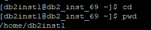
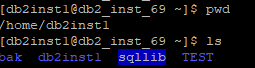
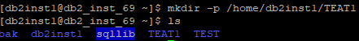

Before performing backup, you need to enable the archive mode for the database. Before performing differential backup and incremental backup, you need to enable the incremental mode for the database.
Enabling the Incremental Mode
- Use PuTTY to log in to the DB2 database host.
- Run the following command to switch to the DB2 database user, for example, db2inst1:
su - db2inst1
- Run the following command on all nodes in the cluster to enable the incremental mode. test indicates the user-defined database name.
db2 update db cfg for test using trackmod on
Enabling the Archive Mode
- Use PuTTY to log in to the DB2 database host.
- Run the following command to switch to the DB2 database user, for example, db2inst1:
su - db2inst1
- Run the following commands to enter and query the database user directory:
cd
pwd
In the following command output, /home/db2inst1 indicates the database user directory.

- Create a folder path with the same name as the database under the database user directory to store archive logs. The following uses the /home/db2inst1/TEST path as an example.
mkdir -p /home/db2inst1/TEST
Under the database user directory, run the ls command to check whether the folder path is successfully created. The command output is as follows:

- Run the following command to enable the archive mode. test indicates the user-defined database name.
db2 update db cfg for test using LOGARCHMETH1 disk:/home/db2inst1/TEST
- Create a folder path with the same name as the database under the database user directory for offline backup. The following uses the /home/db2inst1/TEAT1 path as an example.
mkdir -p /home/db2inst1/TEAT1
Under the database user directory, run the ls command to check whether the folder path is successfully created. The command output is as follows:

- Run the following command to enable offline backup. test indicates the user-defined database name.
db2 backup db test on all nodes to /home/db2inst1/TEAT1